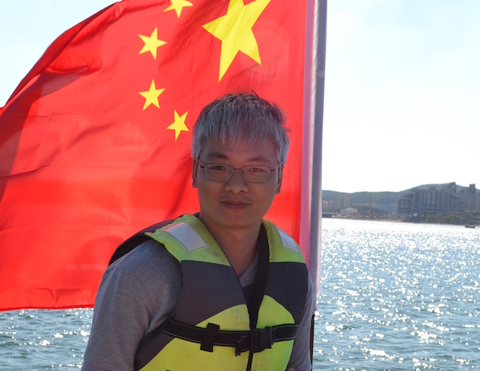

顾洪成，男，博士，东南大学 生物科学与医学工程学院、生物电子学国家重点实验室讲师。
工作经历 | 教育经历 | 研究兴趣 | 科研项目 | 代表论文 | 联系信息
工作经历
- 2017/04 至今，东南大学 生物科学与医学工程学院，讲师
- 2015/07 - 2017/04，东南大学 电子科学与技术学院，博士后
教育经历
- 2009/08 - 2015/06，东南大学 生物医学工程专业，工学博士
- 2013/12 - 2014/12，剑桥大学 工程系，Academic Visitor
- 2005/08 - 2009/06，东南大学 生物医学工程专业，工学学士
研究兴趣
- MEA芯片
- 磁驱动微机器人
- 力学超结构
- 点阵云限域算法
科研项目
- JKW项目（国家级），生物与半导体XXXX芯片设计，2020年-2021年，310万，项目负责人
- 青年科学基金，21902024，超双疏微纳复合结构SERS基底的设计及其双光子3D打印制备，2020年01月-2022年12月，25万，项目负责人
- 江苏省青年科学基金，BK20180408，微结构可控材料的仿生力学设计及激光增材制造，2018年07月-2021年06月，20万，项目负责人
- GF专项（国家级），XX低密度XX，2019年，40万，项目负责人
- GF专项（国家级），XX低密度XX，2018年，30万，项目负责人
- 国家重点研发计划，2017YFA0700500，人体器官芯片的精准介观测量，2017年-2022年，课题四参与人
- GF专项（国家级），XX低密度XX，2017年，30万，项目负责人
- 中国博士后科学基金面上资助，2015M581705，光子晶体微结构对SALDI-MS的信号增强作用研究，2016年-2017年，5万，项目负责人
- 江苏省博士后科研资助，1601255C，光子晶体对SALDI质谱的激光解吸附过程的增强作用研究，2016年-2017年，1万，项目负责人
- 东南大学博士后创新人才资助项目，2242016R20012，光子晶体微结构对SALDI-MS的激光解吸离子化过程的增强作用研究，2016年，1万，项目负责人
代表论文
- X. Liu, H. Gu, H. Ding, X. Du, M. Wei, Q. Chen, Z. Gu*. Adv. Sci. 2020, doi: 10.1002/advs.202000878.
- H. Ding, Q. Zhang, H. Gu, X. Liu, L. Sun, M. Gu*, Z. Gu*. Adv. Funct. Mater. 2019, 30 (2), 1901760.
- X. Liu, H. Gu, H. Ding, X. Du, Z. He, L. Sun, J. Liao, P. Xiao, Z. Gu*. Small 2019, 15 (35), 1902360.
- Y. Cai, F. Wu, Y. Yu, Y. Liu, C. Shao, H. Gu*, M. Li*, Y. Zhao*. Acta Biomaterialia 2019, 84, 222-230.
- X. Liu†, H. Gu†, M. Wang, X. Du, B. Gao, A. Elbaz, L. Sun, J. Liao, Z. Gu*. Adv. Mater. 2018, 30 (22), 1800103.
- H. Wang†, H. Gu†, Z. Chen, L. Shang, Z. Zhao, Z. Gu*, Y. Zhao*. ACS Appl. Mater. Interf. 2017, 9 (15), 12914–12918.
- H. Gu, B. Ye, H. Ding, C. Liu, Y. Zhao*, Z. Gu*. J. Mater. Chem. C 2015, 3(26), 6607-6612.
- H. Gu, Y. Zhao*, Y. Cheng, Z. Xie, F. Rong, J. Li, B. Wang, D. Fu, Z. Gu*. Small 2013, 9 (13), 2266–2271.
- H. Gu, F. Rong, B. Tang, Y. Zhao*, D. Fu, Z. Gu*. Langmuir 2013, 29 (25), 7576-7582.
- Y. Zhao*, H. Gu, Z. Xie, H. C. Shum*, B. Wang, Z. Gu*. J. Am. Chem. Soc. 2013, 135 (1): 54-57.
- Y. Zhao, Z. Xie, H. Gu, C. Zhu, Z. Gu*. Chem. Soc. Rev. 2012, 41(8): 3297-3317.
更多请访问：Google Scholar | ResearchID | ORCID
联系信息
- 地址：南京市玄武区四牌楼2号，逸夫科技馆南201-3
- 电话：025-83795632 转808
- Email：hcgu@seu.edu.cn
- 博客：gulab.cn 或 hcgu.gitee.io（镜像）